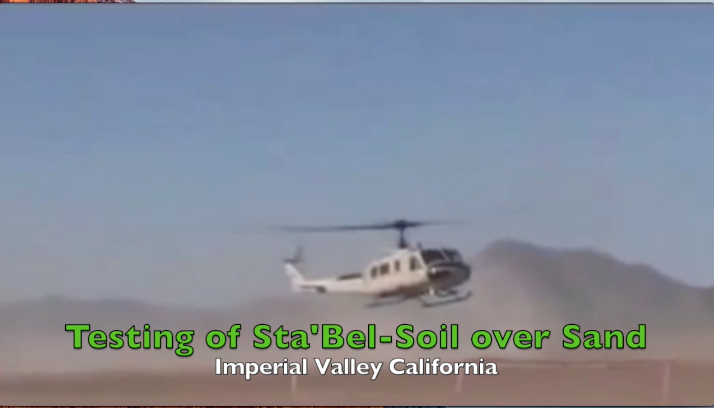
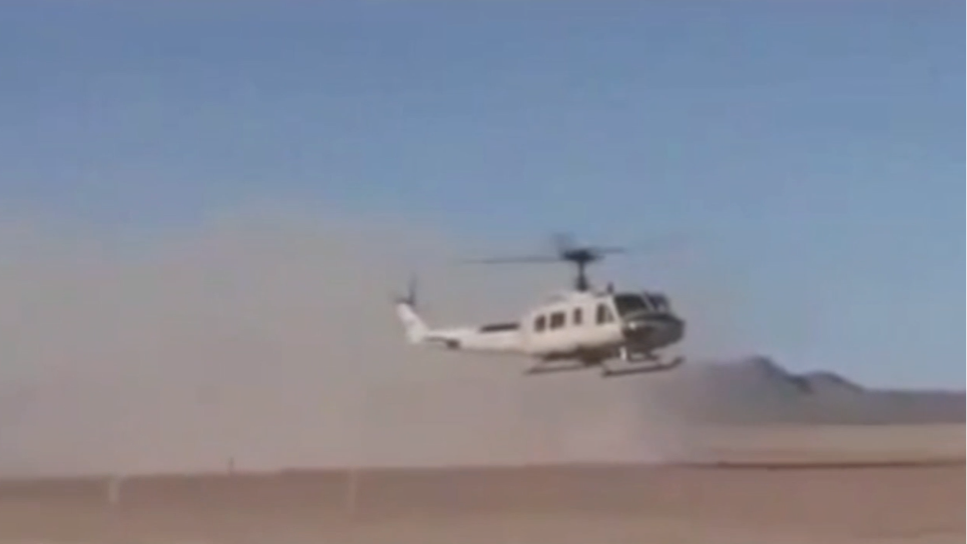
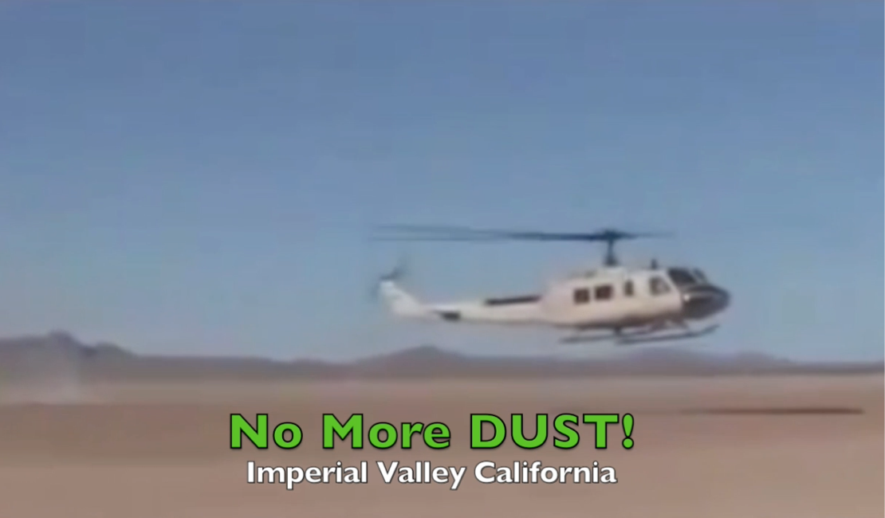
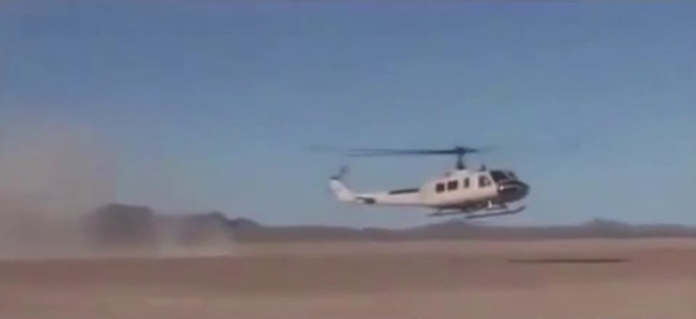
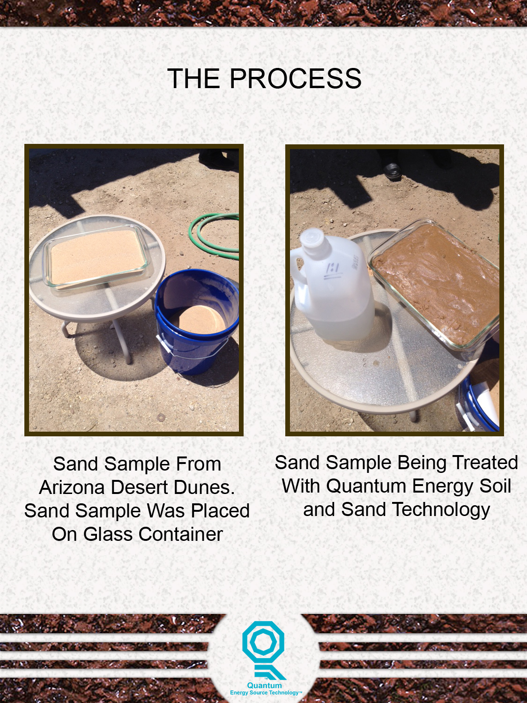
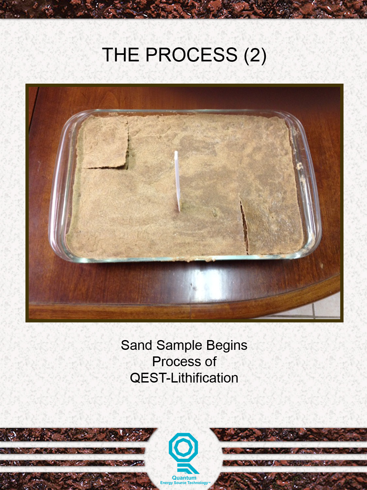
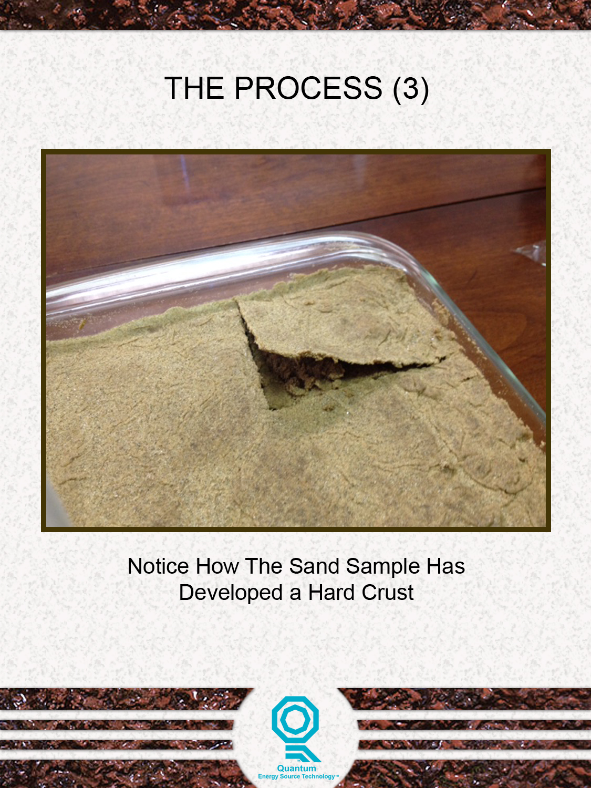
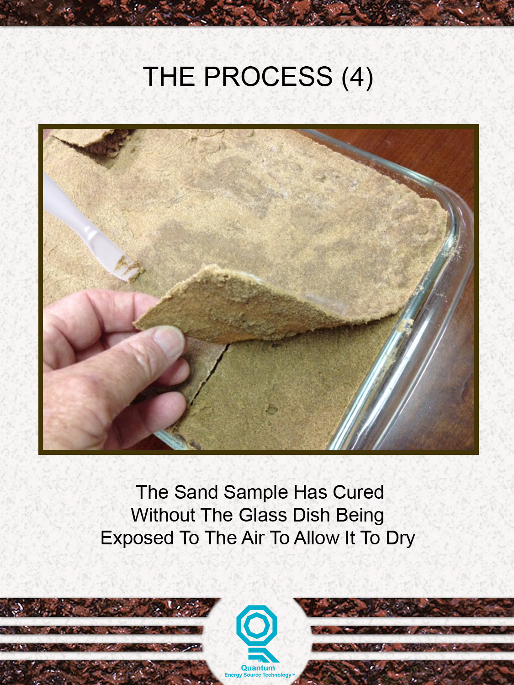

Put a helicopter ten feet over untreated desert sand and it disappears in its own dust cloud. The same helicopter over the treated strip: no dust. The original test footage survives, and it plays below.
Rotor wash is about the harshest dust test that exists short of a storm: a downdraft strong enough to strip loose fines off any untreated surface. In the Imperial Valley test, the helicopter works down to roughly ten feet over sand treated with the product. The three frames below are pulled from the test footage; the overlays ("No More DUST!") are baked into the original frames.




The full test recording was preserved inside one of the original presentation files. It is period footage of period quality, a re-recording of the original tape, but the moment it documents is unambiguous: dust over the untreated approach, none over the treated strip.
A companion demonstration, performed at a desert site in Arizona, shows the mechanism at bench scale: loose dune sand in a glass dish, treated with the product, develops a hard crust and cures into a rigid slab that lifts out in one piece, cured in the dish, without air-drying.



